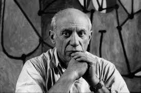
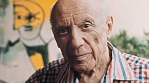

Pablo Picasso
Peintre, sculpteur et cofondateur du cubisme.
Biographie
Pablo Picasso (1881-1973) est un artiste espagnol considéré comme l’un des plus influents du XXe siècle. Il est surtout connu pour avoir cofondé le mouvement cubiste avec Georges Braque, et pour avoir exploré différents styles tout au long de sa carrière.



Œuvres célèbres
- 1903 La ViePériode bleue
- 1907 Les Demoiselles d’Avignon
- 1937 GuernicaDénonciation de la guerre
Styles artistiques
Picasso a traversé plusieurs périodes. Il a aussi travaillé la sculpture, la céramique et le dessin.
Période bleue 1901–1904
Période rose 1904–1906
Cubisme dès 1907
Surréalisme années 1920–1930
Héritage
Son influence sur l’art moderne est immense. Des musées entiers lui sont consacrés, notamment le Musée Picasso à Paris et à Barcelone.